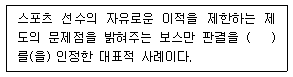
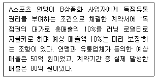
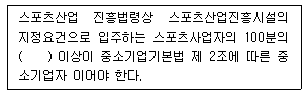
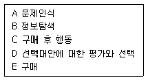
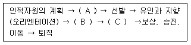
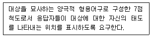

스포츠경영관리사 (2010-05-09 기출문제)
1과목: 스포츠 산업론
1. A씨는 프로축구선수의 에이전트다. A씨가 속한 산업영역을 상위부터 하위까지 올바르게 분류한 것은?
- 스포츠서비스업-스포츠경기업-프로스포츠업
- 스포츠서비스업-스포츠마케팅업-스포츠에이전트업
- 스포츠서비스업-스포츠경기업-스포츠에이전트업
- 스포츠서비스업-스포츠마케팅업-선수양성업
(정답률: 76%)

2. 한국의 평창, 러시아의 소치의 동계올림픽 유치경쟁과 같이 세계 각국의 정부 및 자치단체가 스포츠이벤트 유치에 적극적인 이유에 관한 설명으로 가장 적합하지 않은 것은?
- 지역경제 활성화가 주요 이유이다
- 국가 및 도시이미지 제고에 기여하기 때문이다
- 개최도시 홍보로 인한 파급효과를 기대하기 때문이다
- 지역주민의 심리적 소득만을 기대하기 때문이다
(정답률: 87%)
3. 다음 ( )에 들어갈 가장 알맞은 것은?

- 직업선택의 자유
- 트레이드의 자유
- 계약의 자유
- 샐러리 갭
(정답률: 65%)
4. 다음 사례에서 사업자가 연맹에 지불해야하는 금액 및 시기에 관한 설명으로 옳은 것은?

- 5억 원은 미리 지불하고 계약기간 종료와 함께 8억 원을 추가로 지불한다
- 5억 원은 미리 지불하고 계약기간 종료와 함께 3억 원을 되돌려 받는다
- 8억 원은 미리 지불하고 계약기간 종료와 함께 3억 원을 추가로 지불한다
- 5억 원은 미리 지불하고 계약기간 종료와 함께 3억 원을 추가로 지불한다
(정답률: 76%)
5. 스포츠산업 진흥법령상 스포츠산업지원센터의 지정 및 해제에 관한 설명으로 틀린 것은?
- 스포츠산업지원센터로 지정받으려는 기관은 문화체육관광부장관에게 신청서를 제출하여야 한다.
- 스포츠산업지원센터의 소재지를 변경하면 변경지정을 받아야 한다.
- 문화체육관광부장관은 스포츠산업지원센터를 지정하거나 지정을 해제하려면 미리 해당 지방자치단체장의 승인을 받아야 한다.
- 문화체육관광부장관은 스포츠산업지원센터를 지정하거나 지정을 해제한 경우에는 이를 문화체육관광부의 인터넷 홈페이지에 공고하여야 한다.
(정답률: 66%)
6. 스포츠는 본연의 특성상 개인적, 사회적, 경제적 가치를 가지고 있다. 스포츠 및 스포츠이벤트의 경제적 가치에 관한 설명으로 그 성격이 다른 하나는?
- 건강을 유지 및 증진시켜 의료비 절감효과를 가져온다.
- 지역이벤트의외지인 방문 관람은 지역경제 활성화를 유발한다
- 올림픽 유치는 글로벌 기업의 투자유발로 도시 및 국가 경제 활성화에 기여한다
- 유비쿼터스 경기장은 IT산업의 발전을 촉진시키는 계기가 된다.
(정답률: 81%)
7. 관람스포츠 소비자의 관람(구매)의사결정과정에 관한 설명으로 틀린 것은?
- 각 구단 홈페이지를 검색하는 것은 정보 탐색과정이다.
- 다음 시즌의 시즌티켓을 미리 구매하는 것은 구매 후 행동으로 볼 수 있다.
- 프로농구와 프로배구의 입장권가격을 비교하는 것은 대체안의 평가이다.
- 신문 TV방송프로그램 면에서 중계방송시간을 검색하는 것은 구매행동으로 볼 수 없다
(정답률: 70%)
8. 다음 ( )안에 들어갈 가장 알맞은 것은?

- 10
- 20
- 30
- 40
(정답률: 83%)
9. 스포츠이벤트에서 생성되는 권리 중 성격이 다른 하나는?
- 선수유니폼 공간 활용 권리
- 팀 로고 사용 권리
- 경기장 내 광고 권리
- 경기장 명칭 사용권리
(정답률: 61%)
10. 다음 중 스포츠 산업 정책과 가장 거리가 먼 것은?
- 구청 직원들의 체력단련장 이용
- 구청의 수영장 운영에 대해 보조금 지급
- 야구장 내 맥주 판매를 금지하는 지방자치단체 조례
- 정부의 스포츠시설업 관련 규제 개선
(정답률: 71%)
11. 연고지 변경을 원하는 프로구단과 프로구단 유치를 원하는 자치단체간의 밀고 당기기를 프랜차이즈 게임이라고 한다. 프랜차이즈 게임이 발생하는 원인에 관한 설명으로 틀린 것은?
- 프로구단은 지역경제 활성화에 기여하기 때문이다
- 프로연맹이 리그 소속구단 숫자를 제한했기 때문에 발생한다
- 자치단체간의 경쟁은 주로 시시설임대조건을 걸고 전개된다
- 프로경기를 할 수 있는 경기장 수와 리그 소속 구단 수는 프랜차이즈 게임과 상관 없다
(정답률: 76%)
12. 스포츠산업 진흥법령상 스포츠산업 전문인력 양성기관에 보조할 수 있는 경비가 아닌 것은?
- 전문인력 양성교육기관 설립을 위한 부지매입비 및 공사비
- 전문인력 양성교육에 대한 조사 및 연구에 필요한 비용
- 전문인력 양성교육에 대한 교육자료의 개발 및 보급에 필요한 비용
- 전문인력 양성 교육 프로그램 운영에 필요한 비용
(정답률: 83%)
13. 다음 중 스포츠 콘텐츠 유통경로의 다양화와 가장 밀접한 관계가 있는 것은?
- 경기장건설 기술의 발전
- 광고기법의 발전
- 선수경기력의 향상
- 정보통신기술의 발전
(정답률: 79%)
14. 다음 중 스포츠산업정책상 스포츠서비스업에 해당되지 않는 것은?
- 스포츠경기업
- 스포츠마케팅업
- 스포츠용품유통업
- 스포츠정보업
(정답률: 57%)
15. 다음 중 스포츠이벤트 생산에 필수적인 요소와 가장 거리가 먼 것은?
- 고교 및 대학 팀
- 프로구단
- 심판 및 기록원
- 스포츠에이전트
(정답률: 58%)
16. 다음 중 스포츠소비자의 일반적인 구매의사 결정과정을 바르게 나열한 것은?

- A - B - D - E - C
- B - A - E - C - D
- E - C - A - B - D
- A - B - E - C - D
(정답률: 79%)
17. 스포츠산업에서 벌어지는 사업 중 선수가 사업의 주체가 되는 것은?
- 좌석 라이센스 사업
- 인도스먼트 사업
- 경기장 광고사업
- 프로리그 방송중계권 사업
(정답률: 82%)
18. 스포츠 소비 집단에 적용한 파레토의 법칙에 관한 설명으로 가장 적합한 것은?
- 30%의 소비자가 70%의 매출을 구성한다
- 40%의 열성 팬이 전체 티켓 판매량의 70%를 구성한다
- 20%의 열성 팬이 전체 티켓 판매량의 70%를 구성한다
- 20%의 열성 소비자가 전체 매출의 80%를 구성한다
(정답률: 69%)
19. 다음 중 스포츠산업이 지속적인 성장한 배경과 가장 거리가 먼 것은?
- 주 5일 근무제의 확산
- 국민소득의 증가
- 정보통신 기술의 발달
- 대학진학율의 증가
(정답률: 83%)
20. 다음 중 스포츠 소비자들의 소비태도가 다른 하나는?
- 골프 연습장에서 매일 운동하는 철수(코치가 아님)
- 수영장에서 솜씨를 뽐내는 우진(강사가 아님)
- 헬스클럽에서 근육을 자랑하는 석기(강사가 아님)
- 경기가 있는 날마다 야구장을 찾는 준영(선수가 아님)
(정답률: 82%)
21. 관람스포츠의 수요변화에 관한 설명으로 가장 적합하지 않은 것은?
- 스포츠관람 대체재의 증가는 관람스포츠 수요를 감소시킬 수 있다.
- 관람소비자 소득 수준의 향상은 수요를 증가시킬 수 있다.
- 여가시간의 증가는 관람스포츠 수요변화와 무관하다
- 온라인 게임 산업의 성장은 관람수요의 감소를 불러올 수 있다
(정답률: 82%)
22. 다음 중 스포츠 콘텐츠의 부가가치를 증대시키는 유통경로와 가장 거리가 먼 것은?
- 스포츠 방송
- 경기장
- 스포츠에이전트
- 스포츠전문지
(정답률: 47%)
23. 스포츠산업진흥법상 프로스포츠의 육성에 관한 설명으로 틀린 것은?
- 국가는 스포츠산업의 발전을 도모하고, 국민의 건전한 여가활동을 진작하기 위하여 프로스포츠 육성에 관하여 필요한 시책을 강구하다
- 지방자치단체는 공공체육시설의 효율적 활용과 프로스포츠의 활성화를 위하여 필요하다고 인정하는 경우에는 공유재산을 30년 이내의 기간을 정하여 그 목적 또는 용도에 장애가 되지 아니하는 범위에서 사용, 수익하게 할 수 있다.
- 공유재산을 사용, 수익하게 하는 경우에는 해당 공유재산의 목적 또는 용도에 장애가 되지 아니하도록 사용, 수익하고자 하는 자와의 계약에 따라 사용료를 정할 수 있다
- 공유재산을 사용, 수익하게 하는 경우에는 해당 공유재산의 목적 또는 용도에 장애가 되지 아니하도록 사용, 수익의 내용 및 조건을 부과하여야 한다.
(정답률: 69%)
24. 스포츠조직의 자산(properties) 가치형성요인 중 시장관련요인에 해당하지 않은 것은?
- 감독, 선수, 팀 성적
- 팀의 연고도시
- 팬 지지도
- 언론보도범위
(정답률: 45%)
25. 스포츠산업의 특성에 대한 설명으로 틀린 것은?
- 스포츠산업은 복학적인 산업분류 구조를 가진 산업이다
- 스포츠산업은 시간소비형 산업이다
- 스포츠산업은 오락성이 중심개념인 산업이다
- 스포츠산업은 입지조건이나 시설에 대한 의존도가 낮은 산업이다.
(정답률: 81%)
2과목: 스포츠 경영론
26. 다음 중 직무분석의 목적과 가장 거리가 먼 것은?
- 채용, 배치, 이동, 승진 등의 기초 자료를 제공한다
- 업무개선의 기초가 된다
- 구성원의 훈련 및 개발의 기준이 된다
- 직장상사와 종업원의 관계 개선을 증진한다
(정답률: 68%)
27. 다음 중 국내 프로야구단이 다음 시즌의 경영환경 분석을 위해 구단 경영에 영향을 미치는 요인을 분서한 결과로 적합하지 않은 판단은?
- 팀 간 전력차이가 심해 흥행에 차질이 생길 수 있다
- 신규 구단의 증설로 리그소속 선수의 평균연봉이 낮아질 가능성이 있다
- 경기회복으로 스폰서십 수입이 증가할 수 있다
- 연맹이 FA제도 도입을 결정해 선수연봉 인상이 우려된다
(정답률: 63%)
28. 다음 중 프로구단 경영을 위한 구성요소와 가장 거리가 먼 것은?
- 연고지
- 팀, 선수, 감독
- 기업주로부터의 스폰서십
- 팀워크 및 전략
(정답률: 47%)
29. 올림픽의 장기적인 재원을 확보하는데 큰 역할을 한 TOP(The Olympic Partner)프로그램이 처음 시행된 올림픽은?
- 84년 LA올림픽
- 88년 서울 올림픽
- 92년 바르셀로나 올림픽
- 96년 애틀란타 올림픽
(정답률: 48%)
30. A스포츠용품 회사에서는 X제품을 생산, 판매하고 있다. X제품의 판매단가는 500원이고, 단위당 변동영업비는 250원이다. 고정적인 영업비용이 100만원이라면 손익분기점에 해당되는 매출액 수준은? (단, 주어진 조건 외에는 고려하지 않는다)
- 200만원
- 300만원
- 400만원
- 500만원
(정답률: 40%)
31. 구단이 소속선수의 보유권을 상실하거나 포기하여 다른 구단과 자유롭게 계약을 맺을 수 있는 제도는?
- 구단전속계약제도
- 자유계약제도
- 임의탈퇴선수제도
- 드래프트제도
(정답률: 74%)
32. 스포츠조직에 포터가 제시한 가치사슬 개념을 적용할 경우 지원활동에 해당되는 것은?
- 선수단 전력보강 사업
- 경기장사업 관리
- 시즌티켓 판매사업
- 재무관련
(정답률: 44%)
33. 다음 중 승강제를 도입하고 있는 스포츠 이벤트는?
- MLB
- KBL
- EPL
- NFL
(정답률: 74%)
34. 스포츠조직의 성과를 측정할 수 있는 재무비율에 관한 설명으로 틀린 것은?
- 유동성 비율: 조직이 단기 부채를 상환할 수 있는 능력을 나타내 주는 것으로 유동 자산을 조달할 수 있는 능력을 말한다
- 레버리지 비율: 채무자들에게 채무 상환 능력의 정도를 나타낸다.
- 활동성 비율: 조직이 자산을 얼마나 효과적으로 활용하고 있는가를 나타내는 비율을 말한다
- 수익성 비율: 전반적으로 조직이 얼마나 효과적으로 관리되고 있는지, 즉 조직이 얼마만큼의 이익을 달성했는가를 측정한다
(정답률: 60%)
35. 다음 중 스포츠에이전트의 역할과 가장 거리가 먼 것은?
- 연봉협상 대행
- 마케팅활동 기획 및 진행
- 인도스먼트 협상
- 선수들의 체력관리 및 기술 지도
(정답률: 68%)
36. 스포츠 리더십 이론의 전개 과정을 순서대로 바르게 나열한 것은?
- 행동이론-상황이론-특성이론
- 상황이론-행동이론-특성이론
- 상황이론-특성이론-행동이론
- 특성이론-행동이론-상황이론
(정답률: 46%)
37. 스포츠 경영전략계획의 일환으로 기업의 환경위험을 분석해서 이에 적용 가능하도록 기업 잠재능력의 개발을 위하여 고안된 전략은?
- 포트폴리오 전략
- 경재우위 전략
- 신제품 전략
- 다각화 전략
(정답률: 48%)
38. 스포츠조직의 일반적인 인적자원관리 과정이 다음과 같을 때 ( )안에 들어갈 가장 알맞은 것은?

- A - 교육훈련과 개발, B - 모집, C - 업적의 평가
- A - 업적의 평가, B - 모집, C - 교육훈련과 개발
- A - 모집, B - 교육훈련과 개발, C - 업적의 평가
- A - 모집, B - 업적의 평가, C - 교육훈련과 개발
(정답률: 68%)
39. 프로스포츠 구단에서 인적자원 평가를 통해서 기대할 수 있는 효과와 가장 거리가 먼 것은?
- 조직구성원의 개인적 환경을 이해하여 상황에 따른 탄력적인 주관적 보상체계를 구축하게 한다
- 경영자로 하여금 조직구성원의 질을 향상시키고 효과적으로 활용할 수 있도록 한다
- 모티베이션, 커뮤니케이션과 리더십 등 다른 조직 행위를 바람직하게 개발할 수 있게 한다
- 평가에 근거하여 사람과 업무를 적합하게 결합하여 능력을 발휘할 수 있도록 하고 성공적인 경력개발을 촉진한다
(정답률: 67%)
40. 다음 중 스포츠센터를 중력 모델법을 이용하여 평가 했을 때, 매력도가 가장 높은 것은?
- A스포츠센터 - 200평의 규모, 20분 거리
- B스포츠센터 - 180평의 규모, 15분 거리
- C스포츠센터 - 300평의 규모, 30분 거리
- D스포츠센터 - 250평의 규모, 25분 거리
(정답률: 72%)
41. 스포츠조직의 일반적인 경영관리 과정이 바르게 나열된 것은?
- 계획 → 조직 → 지휘 → 조정 → 통제
- 조직 → 계획 → 조정 → 통제 → 지휘
- 지휘 → 계획 → 조직 → 통제 → 조정
- 조정 → 통제 → 조직 → 계획 → 지휘
(정답률: 73%)
42. 투자로 인해 발생하는 현금유입의 현재가치와 현금유출의 현재가치를 일치시켜주는 할인율은?
- 회계적이익률
- 자기자본이익률
- 총자본이익률
- 내부수익률
(정답률: 51%)
43. 다음 중 조직 내의 직무가 표준화 되어 있는 정도를 의미하는 것으로 조직구성원이 언제 무엇을 어떻게 해야 하는지를 규정하고 명시하는 조직구조의 구성요소는?
- 집권화
- 공식화
- 분권화
- 복잡성
(정답률: 60%)
44. 스포츠조직이 외부의 위협요인과 내부의 약점을 최소화하기 위해 SWOT분석을 통해 도출하는 전략은?
- WT 전략
- WO 전략
- ST 전략
- SO 전략
(정답률: 62%)
45. 스포츠조직의 장기목표 및 자원배분과 관련되어 주로 최고 경영자 단계에서 이뤄지는 의사결정 방법은?
- 기능적 의사결정
- 전술적 의사결정
- 관리적 의사결정
- 전략적 의사결정
(정답률: 59%)
46. 다음 중 직접금융을 통한 자본조달방법이 아닌 것은?
- 회원권판매
- 주식발행
- 전자어음발행
- 스폰서십
(정답률: 70%)
47. 본원적 경쟁우위전략 중 스포츠산업 전체에서 다른 제품이나 서비스와 구별되는 그 기업 고유의 제품특성을 고객에게 인식시키는 전략은?
- 차별화 전략
- 집중화 전략
- 다각화 전략
- 비용우위 전략
(정답률: 59%)
48. 다음 중 골프대회에 출전한 선수에게 주어지는 보상 옵션으로 선수가 선택할 수 있다면 재무관리 측면에서 가장 바람직한 것은? (단 이자율은 년 10%, 복리계산하며, 주어진 조건 외에는 고려하지 않는다)
- 현재 1000만원 받기
- 1년 후 1150만원 받기
- 2년 후 1200만원 받기
- 현재 300만원, 1년 후 300만원, 2년 후 300만원 받기
(정답률: 53%)
49. 다음 중 스포츠 재무관리에 관한 설명으로 틀린 것은?
- 스포츠 재무관리란 재무관리의 이론과 기법을 스포츠에 적용한 분야이다.
- 스포츠 재무관리의 궁극적인 목표는 생산성 추구에 있다
- 스포츠 재무관리의 기능은 크게 투자결정 기능과 자본 조달경정 기능을 구분된다
- 스포츠 관련조직의 재무상태는 대차대조표의 구조를 이용하면 쉽게 이해할 수 있다
(정답률: 58%)
50. Mintzberg의 조직구조 유형에서 스포츠이벤트의 기획을 위해 Tast force를 구성한 뒤 임무가 완수되면 해산되는 임시 조직을 의미하는 구조유형은?
- 애드호크러시
- 기계적 관료구조
- 전문적 관료제구조
- 사업부제구조
(정답률: 69%)
3과목: 스포츠 마케팅론
51. 스포츠행사 주최 측의 PR 활동으로 바람직하지 않은 것은?
- TV 중계권을 패키지로 판매한다
- 스태프와 자원봉사자에게 미디어 교육을 실시한다
- 보도 자료를 제공한다
- 미디어 전담자를 선정하여 운영한다
(정답률: 46%)
52. 다음 중 스포츠 소비자 중심적 가격결정 요인은?
- 스포츠제품의 수요 탄력성
- 경쟁자의 스포츠제품 가격
- 스포츠제품의 생산원가
- 스포츠 제품의 수명주기
(정답률: 48%)
53. 스포츠마케팅 조사에서 수집된 자료 중 2차 자료에 관한 설명으로 옳은 것은?
- 스포츠조직 외부에서만 얻을 수 있다
- 1차 자료보다 비교적 빨리 얻을 수 있다
- 과거 조사의 결과는 2차 자료가 아니다
- 1차 자료를 얻는 것보다 비용이 더 소요된다
(정답률: 58%)
54. 스포츠팬들의 성별에 따라 리커드 척도로 표기한 제품만족도이 차이를 분석하고자 할 때 가장 적합한 통계분석 방법은?
- 빈도분석
- 단순회귀분석
- 카이검증
- 일원분산분석
(정답률: 39%)
55. 다음 중 시장세분화의 행동변수적 기분에 가장 적합한 것은?
- 가족수명주기
- 교육수준
- 사회계층
- 추구하는 편익
(정답률: 57%)
56. 다음 중 경기입장권을 원가기준가격결정방법을 이용하여 선정할 때 고려할 요인과 가장 거리가 먼 것은?
- 운동선수연봉
- 경기장임대료
- TV중계권료
- 예상관중 수
(정답률: 34%)
57. 국내외 기업들이 올림픽, 월드컵 등의 스포츠이벤트에 적극적 투자하는 이유와 가장 거리가 먼 것은?
- 스포츠가 지닌 긍정적인 이미지를 활용하기 위해서이다.
- 올림픽 및 월드컵 중계방송의 시청자에게 접근하기 위해서이다
- 기업이익을 사회에 환원하는 자선사업의 수단이기 때문이다
- 기업인지도 제고를 위한 유력한 수단이기 때문이다
(정답률: 69%)
58. 방송사의 스포츠이벤트 TV중계권 구매 및 중계에 따른 기대효과와 가장 거리가 먼 것은?
- 해당 스포츠 이벤트 방송에 따른 광고수입의 증대
- 이벤트의 성공적 운영을 위한 자금 확보
- 유료 시청 수입의 증대
- 방송사의 중계방송 기술력에 대한 입증
(정답률: 35%)
59. 목표시장의 평가 요인과 가장 거리가 먼 것은?
- 목표시장의 물리적 기후
- 목표시장의 규모 및 크기
- 목표시장 접근가능성
- 목표시장과 관련된 잠재시장의 크기, 구매력 등을 파악할 수 있는 측정가능성
(정답률: 55%)
60. IOC가 대행사를 통해서 주요 사업 영역별로 세계적 대표기업과 계약을 체결하고 올림픽에 대한 재정적, 기술적 지원을 받는 대신 그 대가로 해당 기업에게 올림픽을 전 세계적인 홍보, 광고, 마케팅 수단으로 활용할 수 있는 권한을 부여하는 제도는?
- TMP(The Marketing Program)
- TSP(The Sponsorship)
- TOP(The Olympic Partner)
- TTP(The Title Program)
(정답률: 63%)
61. 제품수명주기 중 도입기에 대한 설명으로 가장 적합한 것은?
- 유사상품이 등장하는 시기이다
- 저가격 책정이 필요한 시기이다
- 제품개선이 필요한 시기이다
- 판매촉진이 필요한 시기이다
(정답률: 49%)
62. 스포츠스폰서를 참여하는 유형에 따라 분류했을 때 그 성격이 다른 하나는?
- 공식스폰서
- 타이틀 스폰서
- 공식공급업체
- 공식상품화권자
(정답률: 53%)
63. 스포츠 스폰서십의 효과측정 유형이 아닌 것은?
- 경기관람객 수의 변화 측정
- 매체노출량 측정
- 소비자 태도변화 측정
- 스폰서십에 따른 매출액 변하 측정
(정답률: 42%)
64. 다음 중 국내 프로스포츠 라이센싱 프로그램에 관한 설명으로 가장 적합하지 않은 것은?
- 제품판매를 목적으로 하지 않는 라이센싱 제품이 있다
- 구단은 구단제품의 판매량에 비례하는 수입을 갖는다
- 구단이 라이센싱 프로그램을 직접 관리할 수 있다
- 라이센싱 제품을 연고지역에서만 판매할 수 있다
(정답률: 62%)
65. 관람동기를 조사하기 위해 스포츠경기장에서 관람자를 우선적으로 표본 추출하는 방법과 가장 거리가 먼 것은?
- 매 20번째 입장하는 관람자를 선정
- 가장 자리 좌석에 앉아 있는 관람자를 선정
- 난수표를 이용하여 좌서번호를 선정
- 현장에서 접근이 용이한 사람마다 선정
(정답률: 38%)
66. 올림픽과 TV방송에 관한 설명으로 틀린 것은?
- 1936년 베를린 올림픽에서 처음으로 TV 실험 중계방송을 실시하였다
- IOC는 1960년 로마 올림픽에서 처음으로 TV 방송중계권을 판매하였다
- 1984년 LA 올림픽에서 방송중계권 프로그램은 LA 올림픽을 흑자 올림픽으로 이끄는데 기여했으며, TOP프로그램의 핵심적인 부분을 차지하고 있다
- 1972년 뮌헨 올림픽에서 처음으로 컬러로 방송되었다
(정답률: 48%)
67. 다음은 무엇에 관한 설명인가?

- 등급척도
- 의미분별척도
- 리커드척도
- 스타펠척도
(정답률: 21%)
68. 스포츠제품의 특성 중 소멸성을 반영하지 않은 것은?
- 예약제도의 도입
- 시간대별로 수요를 토대로 가격 책정
- 시즌티켓의 판매
- 셀프서비스의 도입
(정답률: 61%)
69. 마케팅요인 중 잠재적 고객을 향한 제품이나 서비스에 관한 메시지 전달로 홍보, 광고 및 기타의사 소통을 의미하는 것은?
- 서비스
- 프로모션
- 사람
- 여론
(정답률: 53%)
70. 개선된 스포츠 제품으로 수명 주기를 연장하여 시장점유율을 높이려는 전략은?
- 시장침투
- 시장개척
- 제품다각화
- 신제품개발
(정답률: 22%)
71. 프로구단의 대면(face to face) 마케팅에 관한 설명으로 가장 적합하지 않은 것은?
- 다수의 어린이 회원모집에 효율적이다
- 고가의 연간 시즌권 판매에 적합하다
- 제품의 장,단점에 대한 정보전달이 용이하다
- 시즌회원들의 피드백을 쉽게 받을 수 있다
(정답률: 50%)
72. 스포츠 입장권 수익의 일정비율을 비영리적 단체에게 기부하여, 스포츠 구단의 이미지 제고를 통한 가치창출을 도모하는 활동하는 가장 적합한 것은?
- 사회지향적 마케팅
- 사회적 마케팅
- 자선기부활동
- 공익연계 마케팅
(정답률: 44%)
73. 다음 스포츠제품 중 핵심제품과 가장 거리가 먼 것은?
- 스타플레이어 및 감독
- 월드컵 및 올림픽 경기
- 프로스포츠 라이센싱
- 요가 또는 에어로빅
(정답률: 47%)
74. 매복마케팅의 특징이 아닌 것은?
- 경쟁관계에 있는 공식스폰서에 못지않은 비용을 투입한다
- 사전에 철저하게 계획되거나 의도된 활동이다
- 공식스폰서가 얻을 수 있는 효과를 상대적으로 강화 시킨다
- 특정 제품이나 기업의 촉진을 목적으로 한다
(정답률: 53%)
75. 다음 중 스포츠시장 세분화 조건에 대한 설명으로 틀린 것은?
- 다양한 스포츠 소비자의 특성에 관한 정보가 존재하고 있어 세분된 시장의 규모와 실제 구매력을 측정할 수 있어야 한다
- 표적시장으로 선택한 스포츠 세분시장에 마케팅 노력을 집중시킬 수 있어야 한다
- 세분된 스포츠 시장은 스포츠 조직에 충분한 수익성을 보장해 줄 수 있을 정도의 적정한 규모이어야 한다
- 특정 스포츠 세분시장은 다른 세분화된 시장과 비교해서 마케팅 활동에 대한 반응에서 차이가 없어야 한다
(정답률: 49%)
4과목: 스포츠 시설론
76. 다음 중 등록 체육시설업이 아닌 것은?
- 스키장업
- 골프장업
- 자동차경주장업
- 체력단련장업
(정답률: 71%)
77. 스포츠시설업 가격정책 중 단기적 이익을 목적으로 고가격으로 고소득층을 대상으로 가격을 결정하고 차후에 가격을 내리는 것은?
- 흡수가격정책
- 침투가격정책
- 차별화가격정책
- 시장가격정책
(정답률: 42%)
78. 다음 중 체육시설의 설치, 이용에 관한 법규상 손해보험에 가입해야 하는 사업자는?
- 체육도장업
- 골프연습장업
- 체력단련장업
- 수영장업
(정답률: 49%)
79. 입지별 스포츠시설이 짝지어진 것으로 가장 적합하지 않은 것은?
- 광역권형 시설: 전국대회가 가능한 종합체육시설 및 복합적대규모의 복합시설
- 지역권형 시설: 약 1만~10만의 인구규모를 대상을 설치된 공공, 민간시설
- 지구권형 시설: 한 개의 중⦁고등학교를 대상으로 하는 옥외⦁옥내 소규모 시설로 회관, 학교체육시설, 소규모 민간시설
- 근린권형 시설: 한 개의 초등학교 지역 내 주민들이 이용하는 학교 및 인근 체육시설
(정답률: 49%)
80. 체육시설의 설치⦁이용에 관한 법률상 체육시설업자 또는 사업계획의 승인을 얻은 자가 회원을 모집하고자 할 때에 회원모집계획서를 작성⦁제출해야 하는 시기는 회원모집 개시일 며칠 전인가?
- 7일
- 10일
- 15일
- 30일
(정답률: 50%)
81. 체육시설의 설치⦁이용에 관한 법령상 종합체육시설업에 대한 정의로 가장 적합한 것은?
- 두 종류 이상의 단위체육시설을 같은 사람이 한 장소에 설치하여 하나의 단위체육시설로 경영하는 업
- 3종류 이상의 단위체육시설을 같은 사람이 한 장소에 설치하여 하나의 단위체육시설로 경영하는 업
- 실내수영장을 포함한 두 종류 이상의 신고체육시설을 같은 사람이 한 장소에 설치하여 하나의 단위 체육시설로 경영하는 업
- 트랙을 포함한 두 종류 이상의 단위체육시설을 같은 사람이 한 장소에 설치하여 하나의 단위체육시설로 경영하는 업
(정답률: 46%)
82. 체육시설의 설치⦁이용에 관한 시설업의 공통기준으로서 제시된 등록체육시설업의 필수시설로 설치되어야 하는 것이 아닌 것은?
- 수용인원에 적합한 주차장
- 수용인원에 적합한 관람석
- 매표소⦁사무실⦁휴게실
- 수용인원에 적합한 탈의실 및 급수시설
(정답률: 58%)
83. 체육시설의 설치⦁이용에 관한 법규상 수영장업의 물의 깊이에 대한 시설기준으로 옳은 것은?
- 0.9m 이상 2.4m 이하
- 0.9m 이상 2.7m 이하
- 0.7m 이상 2.4m 이하
- 0.7m 이상 2.7m 이하
(정답률: 45%)
84. 스포츠 시설에서 높은 고객만족도 유지로 기대할 수 있는 효과와 가장 거리가 먼 것은?
- 기존 고객의 충성도를 높인다
- 가격민감도를 높인다
- 경쟁적 노력으로부터 기존 고객을 보호한다
- 미래 거래비용을 낮춘다
(정답률: 62%)
85. 최적의 스포츠시설 입지 선정을 위한 고려사항과 가장 거리가 먼 것은?
- 시설물의 유연성
- 소비자의 접근 용이성
- 주변지역에서 경재자의 위치
- 주변지역 주민들의 인구통계학적 특징
(정답률: 55%)
86. 체육시설의 설치⦁이용에 관한 법규상 4륜 자동차 경주장업의 시설기준으로 틀린 것은?
- 트랙은 길이 2킬로미터 이상으로서 출발지점과 도착지점이 연결되는 순환형태여야 한다
- 트랙의 폭은 11미터 이상 15미터 이하이어야 한다
- 출발지점에서 첫 번째 곡선 부분 시작지점까지는 250미터 이상의 직선구간이어야 한다
- 트랙의 바닥면은 반드시 포장이어야 한다
(정답률: 54%)
87. 프로구단의 매점사업 계약 유형을 전통적인 위탁계약과 관리대행 수수료계약으로 구분할 때 관리대행 수수료계약의 장단점을 옳지 않은 것은?
- 구장 측의 재정적인 부담을 덜게 된다
- 매점운영에 대한 감사업무가 단순해진다
- 구장 측의 수입이 늘어날 가능이 있다
- 구장 측이 일일운영 계획을 할 필요가 없다
(정답률: 23%)
88. 새로운 스포츠의 개발 및 보급을 위해 고려해야 할 사항과 가장 거리가 먼 것은?
- 참가대상이나 지역특성에 맞는 규칙
- 쉽고 간단한 장비로 즐길 수 있는 프로그램
- 비용절감을 위한 운영자 중심의 규칙
- 프로모션 수단의 다각화 가능성
(정답률: 62%)
89. 국내 프로스포츠 구단 중 구장명칭권(Naming Rights)활용의 일환으로 역명 부기권을 계약하여 사용한 최초의 구단은?
- 롯데 자이언츠
- LG 트윈스
- SK 와이번스
- FC 서울
(정답률: 56%)
90. 참여스포츠산업의 환경변화에 대응하기 위해서 스포츠시설업체가 이미지 제고 및 변모를 시도하려고 할 때 우선적으로 중점을 두어야 할 활동으로 가장 적합한 것은?
- PR(Publc Relations)
- SP(Sales Promotion) 활동
- 내부 프로모션(Inter Promotion)
- 스폰서십 유치 활동
(정답률: 59%)
91. 스포츠 시설 이용자들을 유사한 특징을 갖는 집단을 구분하여 전개하는 마케팅 전략은 무엇인가?
- 차별화 전략
- 세분화 전략
- 집중화 전략
- 무차별 전략
(정답률: 50%)
92. 사회체육시설이나 문화복지시설과 같은 도시공공시설의 일반적인 공급 및 수용분석방법 중 이용자와 시설간 거리에 따른 이용률 분석을 통한 이용권역 분석방법과 가장 거리가 먼 것은?
- 곡선거리에 의한 방법
- 직선거리에 의한 방법
- 중력모형에 의한 방법
- 시간개념에 의한 방법
(정답률: 31%)
93. 다음 중 FCB Grid 모델에서 엄격히 회원관리가 이루어지는 고가의 골프장 회원권, 고가의 다기능 휘트니스 기구 등이 해당하는 공간은?
- 고관여/이성 공간
- 고관여/감성 공간
- 저관여/이성 공간
- 저관여/감성 공간
(정답률: 54%)
94. 스포츠 또는 체육 시설에 관한 설명으로 틀린 것은?
- 스포츠시설공간은 각종 스포츠프로그램을 효율적으로 운영하기 위한 필수요건이다
- 스포츠시설공간은 스포츠를 생활화하도록 하는 동기유발의 기능을 담당한다
- 스포츠시설은 중요한 사회간접자본이자 경제적 생산요소로서의 가치를 지니고 있다
- 스포츠시설의 광의의 개념으로는 운동학습을 위한 각종 장소로 규정한다
(정답률: 35%)
95. 광고효과 측정 및 경기장 광고 가격 산정에 활용되는 NTIV(Net TV Value)란 무엇인가?
- TV 중계프로그램의 도달범위를 감안한 광고가치
- 시청률을 감안한 광고가치
- 시청인구를 감안한 광고가치
- TV노출을 광고료로 환산한 가치
(정답률: 40%)
96. 참여 스포츠시설업의 특징에 대한 설명으로 틀린 것은?
- 사업의 특성상 초기 투자비가 많음에도 불구하고 그 회수는 장기간 소요된다
- 대규모 장치사업으로 타 사업에 비해 해당 시설 및 설비 등과 관련된 하드웨어에 대한 지출 비중이 높다
- 개장 후 초기 시설계획이나 운영 컨셉트의 오류 발생 시 쉽게 이를 수정할 수 있으며, 다른 프로그램 운영을 위한 시설로의 변환이 용이하다
- 스포츠시설업은 초기 시설 운영에 있어서 오류가 발생하는 경우 이를 수정하기 위해 막대한 위험과 비용 지출이 수반된다
(정답률: 53%)
97. 국내 프로구단의 경기장 내 수입원과 가장 거리가 먼 것은?
- 입장수입
- 식음료 판매 수입
- PSL(Personal Seat Licensing) 판매 수입
- 라이센싱 및 머천다이징 판매 수입
(정답률: 42%)
98. 다음 중 공공 스포츠시설에 대한 일반적인 설명으로 가장 적합하지 않은 것은?
- 일반대중의 이용도를 높이기 위해 이용자의 요구에 부응하는 시설이다
- 공공성을 최대한 보장한다는 의미에서 일반대중에게 위치선정, 사용기간 등에 있어 균등한 혜택을 부여한다
- 수익의 극대화에 우선순위를 둔 복합 스포츠문화 공간이다
- 사회구성원의 적극적이고 건정한 스포츠 활동을 장려하기 위해 일반 대중들을 대상으로 설치하는 시설을 의미한다.
(정답률: 50%)
99. 소유자와 경영자가 다른 간접경영 형태를 말하며, 일반적으로 정부 또는 지방자치단체가 투자하여 소유하고, 경영은 다른 사람에게 위탁하므로 투자자는 직접경영에 참여하지 않는 형태의 경영방법은?
- 직접경영
- 위탁경영
- 임대경영
- 제3경영
(정답률: 61%)
100. 체육시설의 설치⦁이용에 관한 법령상 18홀인 회원제 골프장의 대중골프장 병설 기준으로 옳은 것은?
- 3홀 이상의 대중골프장
- 6홀 이상의 대중골프장
- 9홀 이상의 대중골프장
- 12홀 이상의 대중골프장
(정답률: 42%)
프로축구선수의 에이전트는 선수의 이적, 계약, 스폰서십 등을 대행하는 역할을 한다. 이는 스포츠마케팅업의 일종으로, 선수의 상품화와 마케팅을 담당한다. 따라서, 산업영역을 상위부터 하위까지 분류하면 스포츠서비스업-스포츠마케팅업-스포츠에이전트업이 된다.